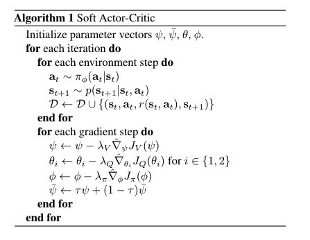
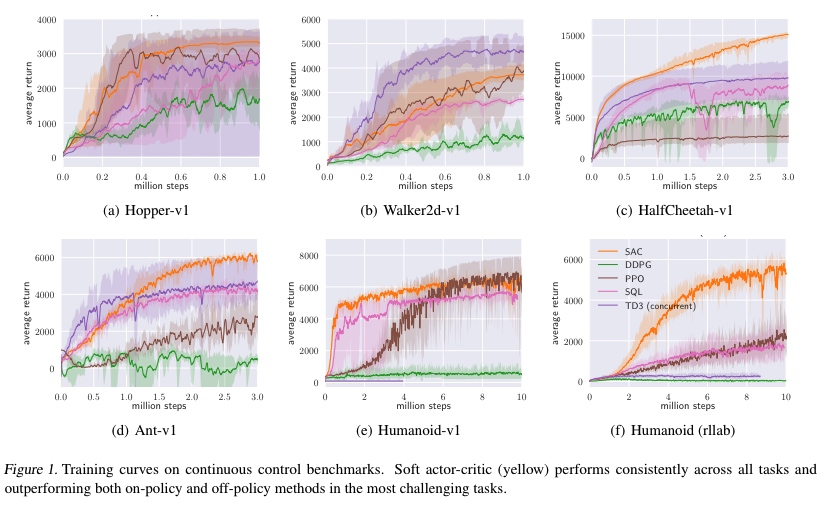

SAC
文章名称为《Soft Actor-Critic: Off-Policy Maximum Entropy Deep Reinforcement
Learning with a Stochastic Actor》
无模型 DRL 在决策和控制任务中得到应用，然而这些方法面临着两个重要的 挑战:非常高的样本复杂性和脆弱的收敛性。因为这需要细致的参数调优。本文提出了一个基于最大熵 rl 框架 SAC，actor 的目标是最大化期望回报同时也最大化熵,最大化熵可以保证足够的探索。
引入熵有以下好处：
- 首先，熵的引入会在放弃明显没前途的路径的同时鼓励探索。
- 其次，策略可以捕捉到多个接近最优行为的模式。
- 最后，前面的工作已经观测到熵会带来更好的探索。而且这篇文章观测到了相对于传统目标函数，新的目标函数可以提高学习速度。
Introduction
DRL低效(poor)的样本效率的原因之一是在策略学习方法上:如 TRPO，PPO 采用 on-policy，需要新的样本在每一次梯度更新中，随着训练次数的增多以 及每次训练所需要的样本数量的增加，采样会变得非常复杂，off-policy 算法 针对过去的经验，这在传统的梯度策略中并不可取，但对于基于 Q-learning 的方法确实比较直接的.另外，离线学习和高维非线性函数逼近与神经网络的结 合对稳定性和收敛性提出重大挑战。
DDPG 由于其极端的脆弱以及超参数敏感性，使用起来很受限，本文便是在 DDPG 的基础上发展而来的框架。设计一个有效稳定的用于连续状态和动作空间的无 模型的 DRL 算法，将最大熵加入到目标函数中。
Soft Actor-Critic
对于大规模连续控制问题，必须使用近似器对策略和 Q-function 进行近似，并使用 SGD 交替更新参数。我们考虑一个状态值函数Vψ(st) 一个 soft Q-functionQθ(st,at),一个策略网络πθ(at,st) 参数分别为其下标。其中值函数可被直接建模为神经网络，策略被建模为一个高斯分布，其均值向量和协方差矩 阵都是由神经网络给出。值得注意的是，一般我们不估计状态值函数，因为它可以由 Q-funciton 和策略决定，但在实践中，增加这一项可以使得训练更稳定，同时 也可以很方便地和其他网络共同训练。
训练状态值函数：
JV(ψ)=Est∼D[21(Vψ(st)−Eat∼πϕ[Qθ(st,at)−logπϕ(at∣st)])2]
梯度可以用一个无偏估计计算：
∇ψ^JV(ψ)=∇ψVψ(st)(Vψ(st)−Qθ(st,at)+logπϕ(at∣st))
训练soft-Q fuction
JQ(θ)=E(at,st)∼D[21(Qθ(st,at)−Q^(st,at))2]
Q^(st,at)=r(st,at)+γEss+1∼p[Vψ¯(st+1)]
用随机梯度进行优化：
∇ψ^JQ(θ)=∇θQθ(st,at)(Qθ(st,at)−r(st,at)−γVψ¯(st+1))
更新中使用目标网络来切段相关性。
训练策略网络：
策略参数可以通过最小化KL距离来获得
Jπ(ϕ)=Est∼D[DKL(πϕ(.∣st)∣∣Zθ(st)expQθ(st,.)]
由于策略是一个分布，动作是根据策略采样得到的，无法对这个loss求导，这里使用了reparameterization trick 来采样动作:
at=fϕ(ϵt;st)
其中ϵt是一个单位高斯分布，f是关于ϕ的表达式，对上述公式动作求积分变为对ϵt求积分，重写loss为：
Jπ(ϕ)=Est∼D,ϵt∼N[logπθ(fϕ(ϵt;st)∣st)−Qθ(st,fϕ(ϵt;st)∣st))]
求导有：
∇ϕ^Jπ(ϕ)=∇ϕlogπϕ(at∣st)+(∇atlogπϕ(at∣st)−∇atQ(st,at))∇ϕfϕ(ϵt;st)
算法框图

实验结果

参考
[1] Haarnoja T, Zhou A, Abbeel P, et al. Soft actor-critic: Off-policy maximum entropy deep reinforcement learning with a stochastic actor[J]. arXiv preprint arXiv:1801.01290, 2018.